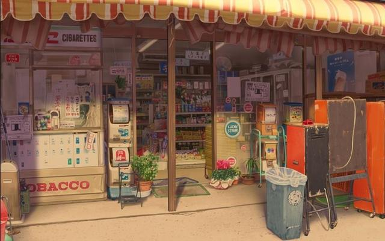

情话
我是个俗气至顶的人，见山是山，见海是海，见花便是花。唯独见了你，云海开始翻涌，江潮开始澎湃，昆虫的小触须挠着全世界的痒。你无需开口，我和天地万物便通通奔向你。我写给你的情话藏在了茫茫评论中。
跟我走吧 忐忑给你 情书给你 不眠的夜给你 四月的清晨给你 雪糕的第一口给你 海底捞最后一颗鱼丸给你 手给你 怀抱给你 车票给你 跋涉给你 等待给你 钥匙给你 家给你 一腔孤勇和余生六十年 全都给你

段子手
想起一段话”我又不是圣人，怎么会希望你过的很好很幸福，我巴不得你过的贫穷孤独，每到深夜时，都是想着我的好。”
小生活
《东邪西毒》里有段词：“以前我认为那句话很重要，因为我相信有些事说出来就是一生一世。现在想想，说不说也没有什么区别。有些事情是会变的，我一直以为自己赢了，直到有一天我看着镜子才知道我输了。在我最美好的时间里，我最喜欢的人不在我身边，如果能重新开始该有多好。”
以前高中打游戏。 经常去网吧通宵。 前面坐个长发妹子。 很长的那种。 每次玩上课睡觉她总会把扎着头发放开 。 多年后同学会发现她剪了短发。 依然那么漂亮。 问她为什么剪了。 她说其实她不喜欢留长头发。 留长头发是为了她后面经常熬夜的少年能够睡个安稳觉不被老师发现。现在不见多年。